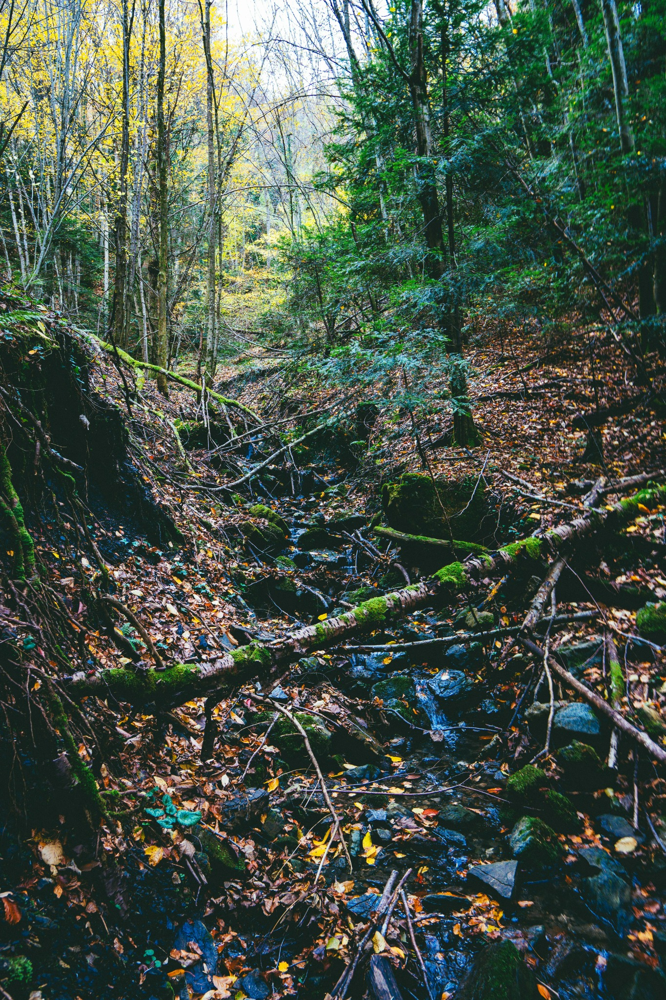

Recovery-optimised RO
ROCore+
Use this module when salinity, conductivity or high-assurance reuse needs RO selection with pretreatment, recovery targets and reject handling checked before supplier pricing.
Open ROCore+ moduleSolutions › FlowPlan Mapping
The building blocks of a treatment system determine whether a plant reaches stable, verified performance - or spends its operational life fighting design decisions that were never properly resolved. This section shows how FlowPlan structures those decisions: translating reuse, compliance, and recovery intent into sequenced treatment operations, each defined by what it achieves and what must be proven before handover.

Overview
Solution Design starts with the purpose and target quality, then builds the minimum necessary sequence of treatment stages to achieve it - with coordination points, controls intent, and validation checks set before procurement begins. The sequence matters: a module placed in the wrong position, or sized against the wrong basis, creates a problem that compounds through every stage downstream. Getting this right the first time is what separates a plant that commissions cleanly from one that needs repeated redesign.
Solution Design translates feasibility work - design basis, constraints, KPIs, and end-use obligations - into a sequenced, implementation-ready module configuration. Each stage is connected to the next: what it receives, what it produces, and what must be confirmed at commissioning. Review the stage shortlist and module families, then engage to align connections and validation requirements before vendor conversations begin.
Start with the minimum set of stages required to achieve your outcome. Additional stages are added only when the design basis and site risks justify them - every addition must earn its place in the sequence.
Once stages are defined, a focused set of technology options is shortlisted against the design basis and site constraints. The families below are representative of established configurations - the final shortlist is determined by your specific diagnostics, footprint, and risk profile.
Each module is a building block with a defined role in the treatment sequence. Select one to see the end-uses it serves, the diagnostics that confirm its design basis, and the configurations it typically forms with other modules.
Solution family
Select a solution family, then a module. The middle column describes what the module is in treatment and the role it plays, while the right column shows the configuration pathways it can support.
Selected module
What it is in treatment
Common reasons it gets selected
Open module cardConfiguration pathways
Solution configurations
High-assurance reuse
Barrier + RO where quality intent requires it.
Key checks
Validation & connections
Water and reuse systems are built as sequences of unit operations - separation and clarification, biological conversion, polishing, barrier treatment, and (where needed) desalination or brine control. FlowPlan diagnostics define the design basis (flows/loads, variability, salinity/chemistry, space and connections, and the intended end-use). From there we define the connections, controls intent, and validation requirements needed to confirm performance at commissioning.
These are outcome tiers expressed in plain quality terms. The diagnostic outputs determine which tier is required, then set the viable configuration (design basis, chemistry, and constraints).
Clarification & Filtration
Introduced where solids carryover or unstable polishing begins to affect downstream filtration, reuse quality, or final discharge consistency. It improves suspended-solids control and gives later barrier or recovery stages a cleaner, more predictable feed.
Biological BOD/COD and ammonia removal
Selected where biological treatment needs more stability, stronger loading resilience, or added capacity under tighter discharge or reuse targets. Applied as pure MBBR or IFAS, it supports BOD/COD reduction and nitrification, and can also contribute to nitrogen removal where the configuration is set up for it.
UF/MF barrier for particles and pathogens
Applied where suspended solids, turbidity, and pathogens must be controlled before direct reuse or upstream of RO. It provides a defined membrane barrier, protects downstream RO, and improves reuse assurance, while dissolved-solids reduction is handled separately by MicraRO+ or ROCore+.
Simple-pass RO for moderate salinity reduction
Chosen when reuse needs go beyond barrier polishing and require moderate dissolved-solids reduction without moving straight into a heavier RO-led recovery route. It often suits cooling tower make-up, process wash, and lower-salinity reuse where full ROCore+ recovery is not yet justified.
Oxidation-based polishing and disinfection
Applied where final colour, odour, pathogen assurance, or trace-organic reduction still needs a stronger finish after the main solids and barrier steps are set. Depending on the target, it may take the form of UV, ozone, hydrogen peroxide, or advanced oxidation rather than a single fixed technology.
Industrial conditioning and brine routes begin where chemistry, salinity, and reject handling become design drivers. Batch treatment stabilises difficult feeds, recovery RO concentrates the route around water recovery and reject management, and ZLD+Prep+ prepares concentrate for what may follow next. The point is not to force a thermal route too early, but to define when the chemistry and brine pathway make it unavoidable.
Industrial and brine schemes usually build in stages: first making the feed controllable, then concentrating recovery around a defined RO route, and only then preparing a concentrate for thermal work where the chemistry and disposal position justify it.
Controlled chemistry conditioning
Introduced where industrial side streams need pH reset, metals precipitation, or targeted coagulation and flocculation before clarification, RO, or brine routing can be stabilised. It is the chemistry block that turns difficult feed water into something the rest of the route can handle with less risk.
Recovery-centred reverse osmosis
Brought in where salinity, conductivity, and end-use quality become central design drivers and water recovery must be paired with a defined reject route. In industrial pathways it often becomes the bridge between conditioned feed water and brine concentration or ZLD readiness.
Brine / thermal feed readiness
Introduced where concentrate streams need scaling control, solids strategy, and thermal-feed discipline before evaporation or crystallisation are considered. It defines whether the brine can move forward and on what chemistry and handling basis.
Evaporation and crystallisation
A final brine-management stage for routes that must move to near-zero liquid discharge. It takes a prepared concentrate, produces a distillate stream for reuse or discharge, and leaves a salt, slurry, or cake stream that has to be handled through the defined outlet route.
Residuals are where OPEX, risk, and public perception accumulate fastest - and where under-specified design decisions cause the most persistent operational problems. These modules define practical, implementable pathways: reducing hauling burden, reaching Class A standards where required, and creating market-ready products where the offtake and regulatory context supports it. Selection is practical in solids mass balance, centrate and loadback impacts, storage and odour constraints, and realistic end-market routes - not aspirational outputs that the site cannot actually sustain.
Sludge routes usually develop in practical steps: first making solids safer and easier to handle, then improving stability and dryness, and finally moving into reuse or thermal outlets only where the standard, logistics, and market route are all workable.
Mechanical dewatering
The first solids-handling step for reducing sludge volume and turning a liquid residual into a cake that can be stored, hauled, dried, composted, or routed onward. It is where hauling burden, polymer demand, and downstream solids logic start to come into focus.
Thermal or bed drying
Introduced after dewatering where mass reduction, Class A readiness, or a drier feed for reuse and thermal routes is required. Bed drying or thermal drying is selected against heat availability, footprint, odour control, and the target outlet.
ASP/Windrow composting
A Class A route where dewatered biosolids are blended and matured into compost for reuse. It suits programmes that can support bulking supply, curing space, odour management, and a realistic outlet rather than storage-led accumulation.
Organo-mineral fertilizer
A value-recovery route that converts stabilised solids into an organo-mineral fertilizer product with more deliberate nutrient formulation and product handling than standard compost routes. It depends on outlet quality, market logic, and consistent feed preparation.
Enhanced biofertilizer
An enriched product route where stabilised solids are blended with biological or nutrient additives to create a higher-value amendment for Class A reuse markets. It is chosen where agronomic positioning and product differentiation matter, not only disposal reduction.
Reuse market planning
The planning element that aligns product targets, compliance needs, logistics, and offtake routes before a reuse path is committed. It turns compost, fertilizer, or biofertilizer from an aspiration into a defined pathway with realistic outlets and quality expectations.
Mono-incineration + recovery
A dedicated thermal route for solids where volume reduction, risk control, and ash-based recovery justify moving beyond land application pathways. It is considered where feed stability, permitting, ash handling, and the recovery route can be defined as part of the overall solids strategy.
Odour and septicity escalate faster than most clients expect: H₂S corrosion damages assets, complaints create community and regulatory exposure, and process upsets compound through the treatment sequence. These modules are applied at headworks, tanks, buildings, and collection networks - beginning with source control and local capture, then moving into higher-duty air treatment only where the discharge point, airflow, or receptor sensitivity demands more. The approach treats odour as a corrosion and safety problem first, a nuisance second - which changes both where the intervention is placed and how it is sized.
Odour and septicity work rarely starts with a single silver-bullet unit. The sequence usually begins by locating the source and defining the air or liquid risk, then controlling formation and treating release locally, and only adding a higher-duty air-treatment step where the discharge point, airflow, or nearby receptors demand more than source capture alone.
Local carbon capture & adsorption
Applied at wet wells, headworks, tank vents, and enclosed handling points where odour must be contained and treated locally rather than simply extracted. Activated-carbon or similar adsorption media capture the odour close to source, reducing release into work areas and lowering the load that any larger downstream air-treatment step must handle.
Chemical/biological dosing
Targets septicity, dissolved sulfide formation, and corrosion risk within rising mains, wet wells, tanks, and upstream process zones before those drivers transfer into the air phase. It works best when the dose point, monitoring points, and expected response are set together.
Higher-duty air treatment
Used where a captured air stream needs more than local adsorption, or where discharge conditions, airflow volume, or receptor sensitivity require a stronger treatment step. It can be configured as a scrubber, biofilter, specialist media bed, or another advanced method, selected against the actual loading, peaks, and discharge requirement.
Heat integration affects both operating cost and biological stability - and is often overlooked until it becomes a constraint. These modules are scoped as defined utility loops with clear connections, fouling and scaling risk assessed upfront, and performance ranges confirmed against plant operating conditions rather than theoretical heat balances.
Heat work often begins with one clear duty rather than a site-wide energy masterplan. These levels reflect that progression: first controlling a temperature problem, then supporting a defined plant duty, and only then moving into wider recovery where the source and sink genuinely line up.
Effluent cooling before treatment
Cooling of hot wastewater or effluent before biological treatment, membrane systems, chemical treatment, reuse polishing, or discharge. A heat exchanger and secondary cooling loop remove heat so the stream enters downstream units within an acceptable temperature band.
Recovered heat for a defined plant duty
Recovery of useful heat from warm wastewater or effluent to support a defined heating duty such as boiler feed preheat, process water heating, digester heating, or other plant heating requirements. Heat is transferred through an exchanger into a dedicated heating loop serving the selected duty.
Low-grade heat screening + upgrade pathways
Screening and integration of low-grade thermal recovery opportunities from wastewater, including heat-pump-ready pathways where technically and commercially justified. Applied where a site may benefit from thermal reuse beyond direct heat exchange, but requires feasibility-led assessment before moving forward.
Share your outcome target and the constraints affecting delivery. We will define the right FlowPlan module configuration - with the diagnostics, validation requirements, and connections that make the solution implementation-ready, not just technically selected.
Fill in the below form and we’ll get you to the right place.